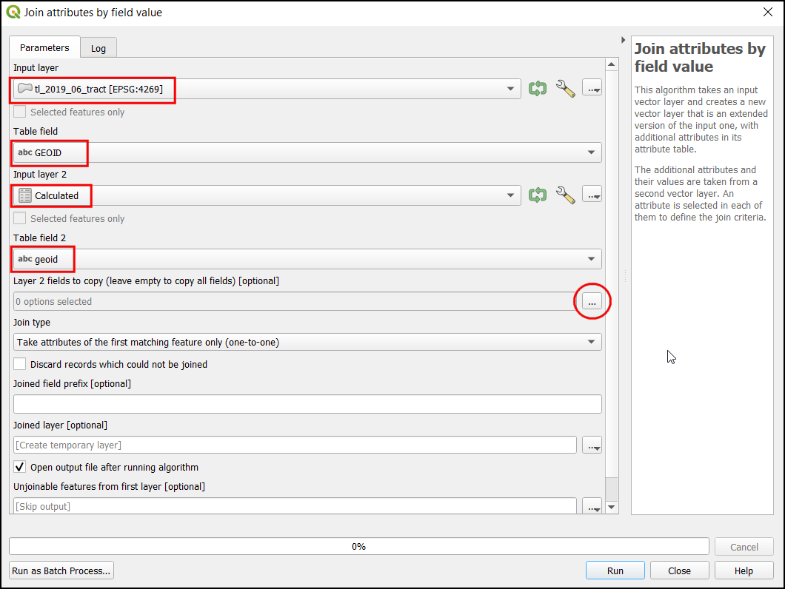
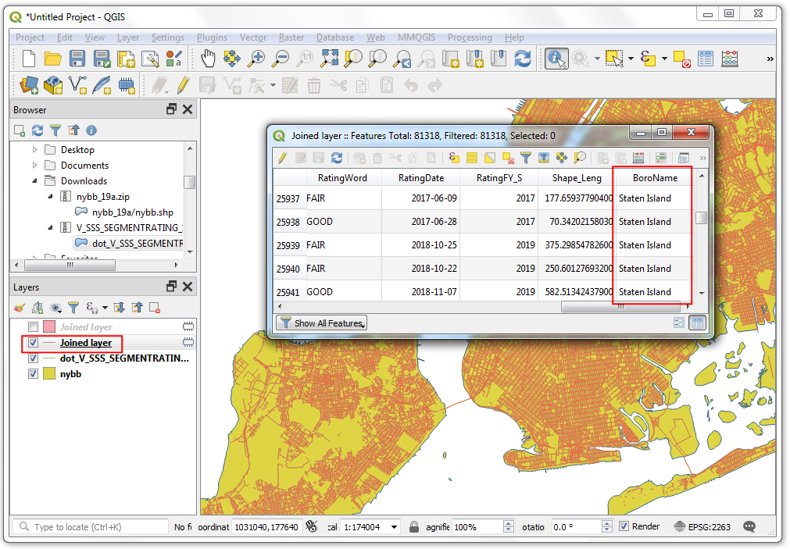

기본 래스터 스타일링 및 분석(QGIS3)¶
많은 과학적 관찰과 연구는 래스터 데이터셋을 생산합니다. 래스터는 특정 값을 할당하는 픽셀 그리드입니다. 이러한 값에 대해 수학적인 연산을 함으로써 우리는 흥미로운 분석을 할 수 있습니다. QGIS에는 래스터 계산기를 통해 할 수 있는 몇 가지 기본적인 분석 기능이 내장되어 있습니다. 이 지침에서는 래스터 계산기가 제공하는 스타일링 래스터 및 기능성에 사용할 수 있는 옵션에 대해 살펴보겠습니다.
작업 개요¶
2000년과 2010년 사이 세계 인구 변화에 대한 지도를 만들기 위해 인구 그리드 데이터를 사용할 것입니다.
다른 스킬¶
레이어들 간에 스타일을 복사/붙여 넣는 방법
데이터 가져오기¶
컬럼비아 대학의 GPW(Grided Population of the World) v4 <https://sedac.ciesin.columbia.edu/data/collection/gpw-v4> 데이터셋을 사용할 것입니다. 구체적으로 GeoTiFF 형식 2.5도 속성(Degree Minute resolution)의 2000년과 2010년 사이 지구 전체 인구수 <https://sedac.ciesin.columbia.edu/data/set/gpw-v4-population-count-rev11/data-download>가 필요합니다. 데이터를 다운로드하려면 무료 지구 데이터 계정<https://urs.earthdata.nasa.gov/home>이 필요합니다.

아래 링크에서 이번예제에 사용되는 샘플파일을 쉽게 내려받을 수 있습니다:
gpw-v4-population-count-rev11_2000_2pt5_min_tif.zip
gpw-v4-population-count-rev11_2010_2pt5_min_tif.zip
데이터 출처 [GPW4]
과정¶
QGIS를 열고 브라우저 패널에서 다운로드한 파일을 찾으십시오. gpw-v4-population-count-rev11_2000_2pt5_min_tif.zip 파일을 압축해제하십시오. gpw-v4-population-count-rev11_2000_2pt5_min.tif 파일을 캔버스로 끌어다 놓습니다.

새 레이어 gpw-v4-population-count-rev11_2000_2pt5_min이 이 레이어 패널에 추가됩니다. 이와 같은 방식으로 gpw-v4-population-count-rev11_2010_2pt5_min_tif.zip 파일을 찾으십시오. 압축해제 후 gpw-v4-population-count-rev11_2010_2pt5_min.tif 파일을 캔버스로 끌어다 놓습니다.

이 레이어들을 살펴봅시다. 속성 툴바에서 객체 식별 버튼을 클릭합니다. 도구를 선택한 후 캔버스에서 원하는 지점을 클릭하십시오.

해당 픽셀과 관련된 값이 식별 결과 패널에 표시됩니다. 식별 결과 패널에서 모든 레이어 모드로 변경하십시오. 이 모드는 모든 래스터의 픽셀 값을 보여줍니다. 두 레이어의 값을 비교합니다. 래스터의 분해능은 약 5km x 5km이므로 픽셀 값은 픽셀로 대표되는 면적(25평방 킬로미터) 내의 총 인구를 나타냅니다.

식별 결과 패널을 닫으십시오. 레이어를 더 시각화해봅시다. 레이어 패널에서 Open the layer Styling panel 버튼을 엽니다.

레이어 스타일 작업 패널에서 렌더링 유형을 확장하고 단일밴드 유사색상을 선택합니다.

This renderer will style the layer using a color ramp. The default color ramp is white-red where the minimum value will be assigned the white color and the maximum value in the layer will be assigned the red color. The intermediate values will be assigned a shade of red linear interpolation. Expand the Min / Max Value Settings and choose
Cumulative count cutoption. You will see that the map visualization is much better now. The standard data range is set from 2% to 98% of the data values, meaning that the outliers will not be used to set the minimum and maximum values, resulting in a much more representative visualization.

레이어 스타일 작업 패널을 닫습니다. 다른 레이어에도 비슷한 스타일링을 적용할 수 있습니다. 그러나 스타일을 한 레이어에서 다른 레이어로 옮기는 더 쉬운 방법이 있습니다. gpw-v4-population-count-rev11_2010_2pt5_min 레이어를 우클릭하고 스타일 ‣ 스타일 복사를 선택합니다.

이제 스타일 지정되지 않은 gpw-v4-population-count-rev11_2000_2pt5_min 레이어를 우클릭하고 스타일 ‣ 스타일 붙여넣기를 선택하십시오.

동일한 스타일링 매개변수가 다른 레이어에 적용됩니다. 이 기능은 동일한 범주화를 사용하여 다른 레이어를 비교할 때 특히 유용합니다. 상단 레이어의 가시성을 전환하면 모집단의 변화를 시각적으로 볼 수 있습니다.

우리의 과제는 인구 변화에 대한 지도를 만드는 것입니다. 두 레이어 간의 차이를 계산하고 각각의 픽셀이 모집단의 변화를 나타내는 또 다른 래스터를 생성해봅시다. 래스터 ‣ 래스터 계산기로 이동합니다.
Raster Bands 부분에서는 레이어를 두 번 클릭하여 선택할 수 있습니다. 밴드의 이름은 래스터 이름 다음에 @와 밴드 번호가 붙습니다. 래스터들은 각각 1개의 밴드를 가지고 있기 때문에 그 계층 이름에 @1의 이름을 붙이게 됩니다. 래스터 계산기는 래스터 픽셀에 수학 연산을 적용할 수 있습니다. 이번에는 2000년 인구에서 2010년 인구를 빼는 간단한 공식을 입력하고자 합니다. 다음 식을 입력합니다. 그런 다음 산출 레이어 옆의 … 버튼을 클릭하십시오.
"gpw-v4-population-count-rev11_2010_2pt5_min@1" - "gpw-v4-population-count-rev11_2000_2pt5_min@1"
population_change_2010_2000.tif를 산출 레이어로 입력합니다. 확인을 눌러 계산을 시작하십시오.

완료되면 새로운 레이어 population_change_2010_2000이 레이어 패널에 추가됩니다. 인구의 감소/증가 변화가 더 잘 보이도록 스타일링을 바꿉니다. 레이어 패널에서 Open the layer Styling panel 버튼을 클릭하십시오.

One option is to use the similar styling technique as earlier and choose a diverging color ramp. Click the Color ramp drop-down and select
Spectralramp. Click the drop-down again and chooseInvert Color Rampto assign blues to low values and reds to high values.

이것은 좋은 시각화 방법이지만 해석하기 쉽지는 않습니다. “감소”, “유지”, “성장”, “고성장” 등 4가지 분류로 더 나은 지도를 만들어봅시다. 클래스가 있는 표로 스크롤하십시오. ‘Shift’ 키를 누르고 (모든) 행을 선택합니다. ‘선택한 행 제거’ 버튼을 클릭합니다.

‘보간’을 “불연속”으로 변경합니다. 이제 색 지도를 수동으로 만들 것입니다. ‘수동으로 값 추가’ 버튼을 클릭합니다. 값을 두 번 클릭하여 “-100”으로 입력하고 “Decline”을 ‘라벨’로 입력합니다. 색상을 두 번 클릭하여 이 범주에는 파란색을 적용합니다. 색상 맵이 작동하여 입력된 값보다 낮은 모든 값에 해당 항목의 색상이 부여될 것입니다. 이제 캔버스는 감소하는 인구 변화를 가진 지역만 보여줄 것입니다.

Complete the color-map with suitable values. I chose
100,1000and100000as the upper-bounds for theNeutral,GrowthandHigh Growthcategories respectively. Assign colors to each of created categories, for example beige, orange and red.

시각화에 만족하면 레이어 스타일 작업 패널을 닫습니다. 이제 인구 변화에 대한 세계 주제 지도가 완성되었습니다.
